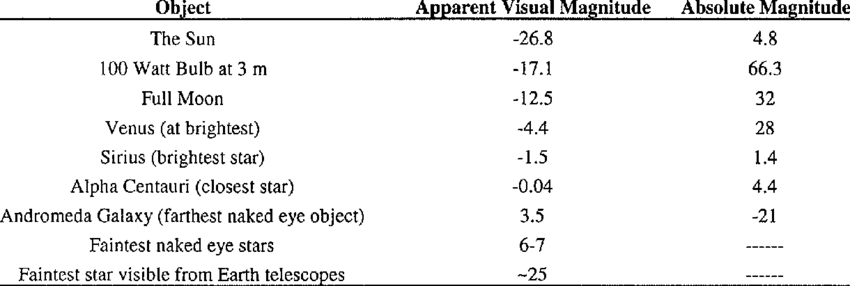

Apunts a mà de l'altre dia
Els planetes són els cossos que tenen més brillantor del cel perquè estan més a prop i eren considerats Deus perquè es podien moure pel cel (planeta significa "errant" "vagabund"). La brillantor dels estels va ser classificat per Hiparc fa 2500 anys en una escala de l'1 al 6 (les més brillants són un 1 i les menys brillants un 6). Pogson al 1856 va proposar una escala diferent. Una estrella de magnitud 2 és 5√100 ≈ 2,512 vegades menys brillant que la de magnitud 1 i una estrella de magnitud 6 seria exactament 100 vegades menys brillant que una estrella de magnitud 1. Alguns planetes o estrelles molt brillants sortiran números de 0 o negatius i les estrelles molt débils de brillantor seran superiors a 6. Aquesta brillantor observada des de la Terra s'anomena magnitud aparent (m) i la magnitud real que es produiria si estigués en ella es diu magnitud absoluta (M) i acostuma a ser molt negativa. Comparant M i m puc saber distancies.
La fòrmula matemàtica que relaciona distància i magnituds és la següent: $$d = 10^{\left(\frac{M-m}{5}\right)+1}$$